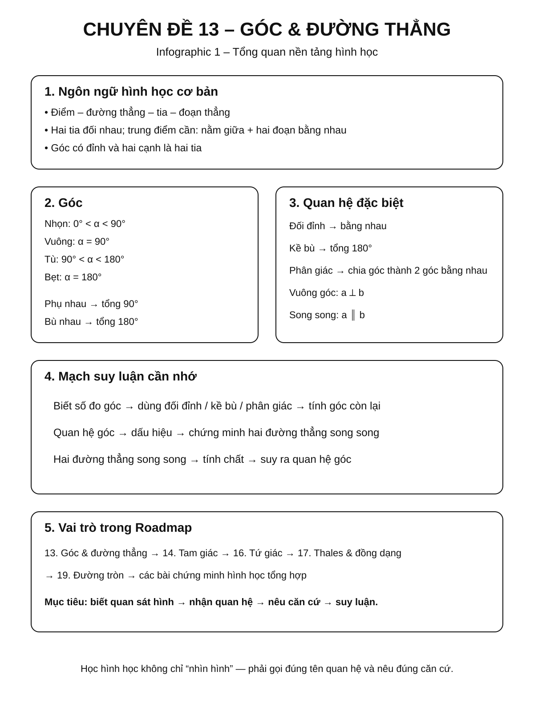
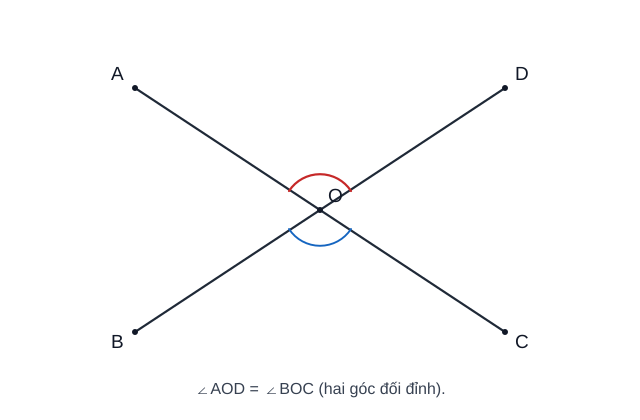
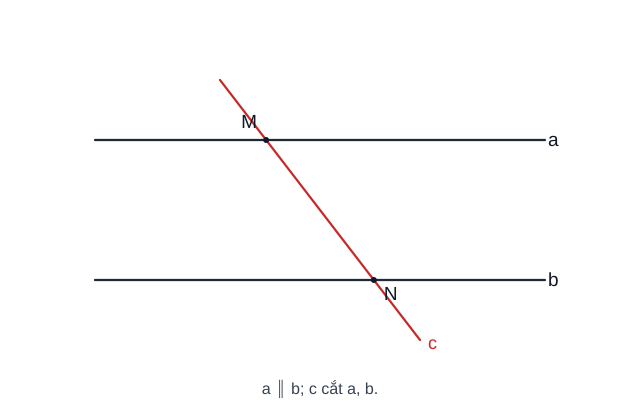
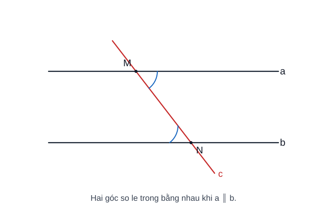
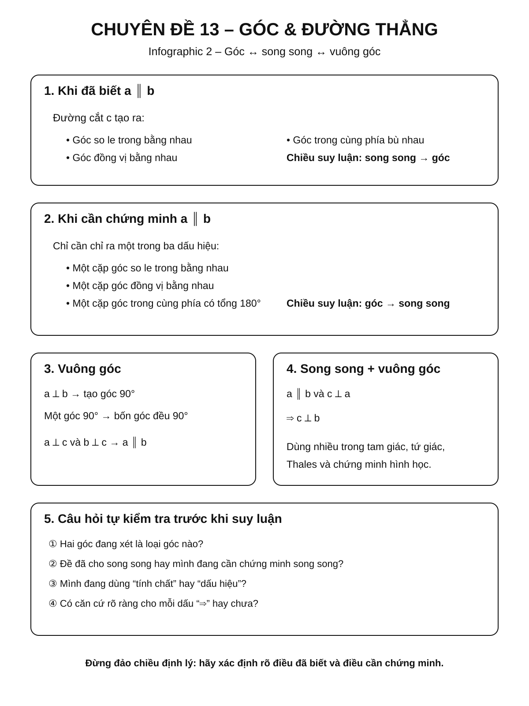
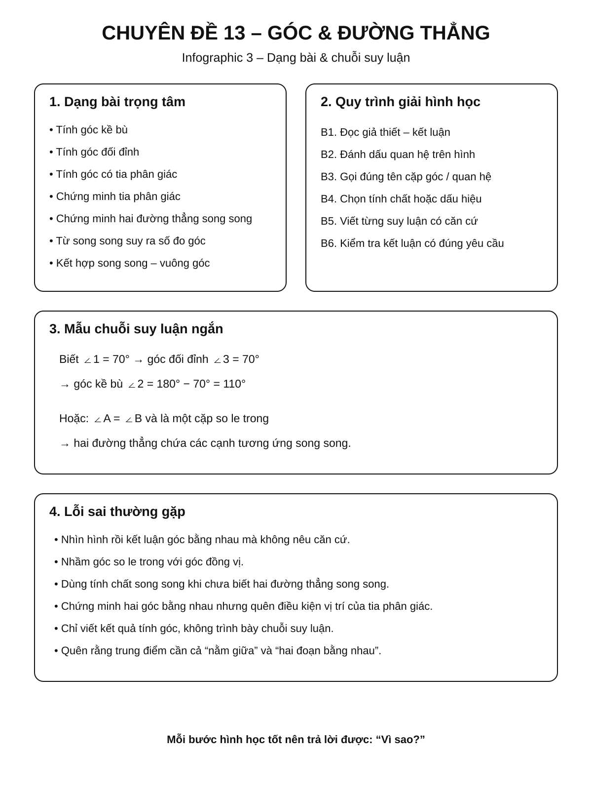

Chuyên đề 13 – Góc và quan hệ giữa các đường thẳng
Trạng thái: Đã kiểm định nội dung học thuật; cấu trúc Roadmap chuẩn 11 mục.
Lớp trọng tâm: 6–7 Mạch kiến thức: Hình học Mức ưu tiên: ⭐⭐⭐⭐⭐
Vai trò trong Roadmap: nền tảng của toàn bộ mạch Hình học THCS. Chuyên đề này chuẩn hóa ngôn ngữ về điểm, đường thẳng, tia, góc, song song, vuông góc và cách suy luận hình học trước khi học tam giác, tứ giác, Thales và đường tròn.
🧭 1. Bản đồ kiến thức
Infographic 1 – Tổng quan chuyên đề

GÓC VÀ QUAN HỆ GIỮA CÁC ĐƯỜNG THẲNG
│
├── 1. Điểm – đường thẳng – tia – đoạn thẳng
│ ├── Điểm thuộc / không thuộc đường thẳng
│ ├── Hai tia đối nhau
│ ├── Trung điểm đoạn thẳng
│ └── Độ dài đoạn thẳng
│
├── 2. Góc
│ ├── Đỉnh – cạnh của góc
│ ├── Góc nhọn, vuông, tù, bẹt
│ ├── Hai góc kề nhau
│ ├── Hai góc phụ nhau, bù nhau
│ └── Tia phân giác
│
├── 3. Hai đường thẳng cắt nhau
│ ├── Góc đối đỉnh
│ ├── Góc kề bù
│ └── Hai đường thẳng vuông góc
│
├── 4. Hai đường thẳng song song
│ ├── Góc so le trong
│ ├── Góc đồng vị
│ ├── Góc trong cùng phía
│ └── Dấu hiệu nhận biết song song
│
└── 5. Chuỗi suy luận hình học
├── Biết góc → tính góc
├── Quan hệ góc → chứng minh song song
├── Song song → suy ra quan hệ góc
└── Kết hợp vuông góc – song song
Minh họa trực quan
1. Góc đối đỉnh

Khi hai đường thẳng cắt nhau, hai góc đối đỉnh bằng nhau.
2. Hai đường thẳng song song và một đường cắt

Hình này giúp nhận biết cấu hình cơ bản gồm hai đường thẳng song song và một đường thẳng cắt chúng.
3. Góc so le trong

Khi hai đường thẳng song song bị cắt bởi một đường thẳng, các cặp góc so le trong bằng nhau.
🎯 2. Mục tiêu cần đạt
Sau khi hoàn thành chuyên đề, học sinh cần có thể:
- [ ] Đọc và sử dụng đúng ký hiệu điểm, đoạn thẳng, tia, đường thẳng và góc.
- [ ] Phân loại được góc theo số đo.
- [ ] Tính được số đo góc từ quan hệ kề bù, phụ nhau, bù nhau, đối đỉnh.
- [ ] Nhận biết và sử dụng đúng tia phân giác.
- [ ] Hiểu ý nghĩa của hai đường thẳng vuông góc và song song.
- [ ] Nhận dạng được góc so le trong, đồng vị, trong cùng phía.
- [ ] Chứng minh được hai đường thẳng song song từ quan hệ góc.
- [ ] Từ hai đường thẳng song song, suy ra được các góc bằng nhau hoặc bù nhau.
- [ ] Biết trình bày một chuỗi suy luận hình học ngắn, rõ căn cứ.
- [ ] Chuẩn bị đủ nền tảng để học tam giác, tứ giác, Thales và hình học chứng minh.
📖 3. Kiến thức cốt lõi
Infographic 2 – Góc, song song và vuông góc

3.1. Điểm, đường thẳng, tia và đoạn thẳng
Điểm và đường thẳng
Nếu điểm A nằm trên đường thẳng d, viết:
A ∈ d
Nếu điểm B không nằm trên d, viết:
B ∉ d
Qua hai điểm phân biệt xác định được một và chỉ một đường thẳng.
Tia
Tia Ox có gốc là O và kéo dài vô hạn theo một phía.
Hai tia Ox và Oy là hai tia đối nhau nếu:
- cùng gốc
O; - nằm trên cùng một đường thẳng;
- đi về hai phía ngược nhau.
Đoạn thẳng
Đoạn thẳng AB gồm hai đầu mút A, B và các điểm nằm giữa chúng.
Độ dài đoạn thẳng được ký hiệu AB khi không gây nhầm lẫn với tên đoạn thẳng.
Trung điểm
Điểm M là trung điểm của AB khi đồng thời:
Mnằm giữaAvàB;MA = MB.
⚠️ Chỉ có
MA = MBchưa đủ để kết luậnMlà trung điểm nếu chưa biếtMnằm trên đoạnAB.
3.2. Góc và số đo góc
Góc xOy có:
- đỉnh là
O; - hai cạnh là các tia
Ox,Oy.
Số đo góc thường viết:
∠xOy = 60°
Phân loại góc
| Loại góc | Điều kiện |
|---|---|
| Góc nhọn | 0° < α < 90° |
| Góc vuông | α = 90° |
| Góc tù | 90° < α < 180° |
| Góc bẹt | α = 180° |
3.3. Hai góc kề nhau, phụ nhau, bù nhau
Hai góc kề nhau
Hai góc có:
- chung một đỉnh;
- chung một cạnh;
- phần trong không giao nhau.
Hai góc phụ nhau
Hai góc phụ nhau khi tổng số đo bằng 90°.
Ví dụ:
35° + 55° = 90°
Hai góc bù nhau
Hai góc bù nhau khi tổng số đo bằng 180°.
Hai góc kề bù
Nếu hai góc vừa kề nhau vừa có tổng bằng 180°, chúng là hai góc kề bù.
Nếu Ox và Oy là hai tia đối nhau, tia Oz nằm giữa hai tia đó thì:
∠xOz + ∠zOy = 180°
3.4. Tia phân giác của một góc
Tia Oz là tia phân giác của ∠xOy khi:
Oznằm giữaOxvàOy;∠xOz = ∠zOy.
Khi đó:
∠xOz = ∠zOy = 1/2 ∠xOy
Ví dụ:
Nếu ∠xOy = 80° và Oz là tia phân giác thì:
∠xOz = ∠zOy = 40°.
3.5. Góc đối đỉnh
Khi hai đường thẳng cắt nhau, hai góc có các cạnh tương ứng là hai cặp tia đối nhau gọi là hai góc đối đỉnh.
Tính chất
Hai góc đối đỉnh thì bằng nhau.
Nếu ∠1 và ∠3 đối đỉnh thì:
∠1 = ∠3.
Nếu ∠1 = 70° thì góc đối đỉnh với nó cũng bằng 70°; hai góc kề với nó bằng:
180° - 70° = 110°.
Đây là một trong những chuỗi suy luận góc cơ bản nhất của Hình học THCS.
3.6. Hai đường thẳng vuông góc
Hai đường thẳng a và b vuông góc nếu chúng cắt nhau và tạo thành một góc vuông.
Ký hiệu:
a ⟂ b
Nếu một trong bốn góc tại giao điểm bằng 90° thì cả bốn góc đều bằng 90°.
3.7. Hai đường thẳng song song
Hai đường thẳng phân biệt cùng nằm trong một mặt phẳng và không có điểm chung gọi là hai đường thẳng song song.
Ký hiệu:
a ∥ b
Khi một đường thẳng c cắt hai đường thẳng a, b, ta có các cặp góc quan trọng.
Góc so le trong
Hai góc nằm:
- phía trong giữa
avàb; - ở hai phía khác nhau của đường cắt.
Góc đồng vị
Hai góc ở vị trí tương ứng giống nhau tại hai giao điểm.
Góc trong cùng phía
Hai góc:
- đều nằm phía trong giữa hai đường thẳng;
- cùng nằm một phía của đường cắt.
3.8. Tính chất của hai đường thẳng song song
Nếu a ∥ b và c cắt a, b thì:
- các góc so le trong bằng nhau;
- các góc đồng vị bằng nhau;
- các góc trong cùng phía bù nhau.
Đây là chiều suy luận:
a ∥ b
↓
quan hệ góc
3.9. Dấu hiệu nhận biết hai đường thẳng song song
Nếu đường thẳng c cắt a, b và có một trong các điều kiện sau thì a ∥ b:
- một cặp góc so le trong bằng nhau;
- một cặp góc đồng vị bằng nhau;
- một cặp góc trong cùng phía bù nhau.
Đây là chiều suy luận ngược:
quan hệ góc
↓
a ∥ b
⚠️ Học sinh cần phân biệt rõ tính chất và dấu hiệu. Một bên đi từ song song đến góc, bên kia đi từ góc đến song song.
3.10. Quan hệ giữa vuông góc và song song
Tính chất 1
Nếu hai đường thẳng phân biệt a, b cùng vuông góc với đường thẳng c:
a ⟂ c và b ⟂ c
thì:
a ∥ b.
Tính chất 2
Nếu:
a ∥ b và c ⟂ a
thì:
c ⟂ b.
Hai tính chất này được dùng rất nhiều trong chứng minh tam giác, tứ giác và hình học tổng hợp.
3.11. Tiên đề Euclid về đường thẳng song song
Qua một điểm \(M\) nằm ngoài đường thẳng \(a\), có một và chỉ một đường thẳng đi qua \(M\) và song song với \(a\).
Điểm cần nhớ là tính duy nhất: nếu hai đường \(b,c\) cùng đi qua \(M\) và đều song song với \(a\), thì \(b\) và \(c\) phải là cùng một đường thẳng.
3.12. Định lí – giả thiết – kết luận – bước đầu chứng minh
Một định lí thường có thể đọc dưới dạng:
- Giả thiết (GT): P – những dữ kiện được cho.
- Kết luận (KL): Q – điều cần suy ra.
Khi chứng minh, mỗi bước nên viết theo cấu trúc:
Căn cứ có thể là giả thiết, định nghĩa, tính chất/định lí đã học hoặc một kết quả đã chứng minh ở bước trước.
⚠️ Không dùng “nhìn hình thấy” làm căn cứ. Hình vẽ không tạo thêm giả thiết.
🔗 4. Kiến thức liên quan
Kiến thức nên biết trước
- Cách đo độ dài và số đo góc.
- Phép cộng, trừ số tự nhiên và số hữu tỉ đơn giản.
- Khái niệm cơ bản về điểm và đoạn thẳng.
Chuyên đề sử dụng trực tiếp kiến thức này
- 14. Tam giác
- 15. Các đường đồng quy trong tam giác
- 16. Tứ giác và các hình đặc biệt
- 17. Định lý Thales và tam giác đồng dạng
- 19. Đường tròn
🧩 5. Các dạng bài cần nắm vững
Infographic 3 – Dạng bài và chuỗi suy luận

Dạng 1 – Tính góc kề bù
Dấu hiệu nhận biết
Có một góc đã biết và hai góc kề nhau tạo thành góc bẹt.
Phương pháp
Dùng:
α + β = 180°
Ví dụ
Nếu ∠xOz = 125° và Ox, Oy là hai tia đối nhau thì:
∠zOy = 180° - 125° = 55°.
Dạng 2 – Tính góc đối đỉnh
Dấu hiệu nhận biết
Hai đường thẳng cắt nhau.
Phương pháp
- Góc đối đỉnh bằng nhau.
- Góc kề bù có tổng
180°.
Ví dụ
Một góc bằng 68°.
- Góc đối đỉnh:
68°. - Hai góc còn lại:
112°.
Dạng 3 – Tính góc có tia phân giác
Nếu Oz là tia phân giác của ∠xOy thì:
∠xOz = ∠zOy = 1/2 ∠xOy.
Ví dụ:
∠xOy = 124°
suy ra:
∠xOz = ∠zOy = 62°.
Dạng 4 – Chứng minh một tia là phân giác
Muốn chứng minh Oz là phân giác của ∠xOy, cần chứng minh:
Oznằm trong gócxOy;∠xOz = ∠zOy.
Không được chỉ chứng minh hai góc bằng nhau mà bỏ điều kiện vị trí của tia.
Dạng 5 – Tính góc khi có hai đường thẳng song song
Quy trình
- Xác định cặp góc cần dùng.
- Gọi đúng tên quan hệ: so le trong, đồng vị, trong cùng phía.
- Dùng tính chất song song.
- Nếu cần, kết hợp kề bù hoặc đối đỉnh.
Ví dụ
Nếu a ∥ b và một góc đồng vị bằng 72°, góc đồng vị tương ứng cũng bằng 72°.
Góc kề bù với nó bằng:
180° - 72° = 108°.
Dạng 6 – Chứng minh hai đường thẳng song song
Dấu hiệu thường dùng
- So le trong bằng nhau.
- Đồng vị bằng nhau.
- Trong cùng phía bù nhau.
- Hai đường thẳng phân biệt cùng vuông góc với đường thẳng thứ ba.
Cách trình bày mẫu
Ta có
∠A = ∠B. Hai góc này ở vị trí so le trong. Do đóa ∥ b.
Phần quan trọng không chỉ là hai góc bằng nhau mà còn phải nêu đúng vị trí của chúng.
Dạng 7 – Chứng minh hai đường thẳng vuông góc
Có thể dùng một trong các hướng:
- chứng minh một góc tạo bởi hai đường thẳng bằng
90°; - dùng quan hệ song song với một đường đã biết vuông góc;
- từ các quan hệ góc đã biết, tính được góc tạo bởi hai đường thẳng bằng
90°.
Dạng 8 – Chuỗi tính nhiều góc
Một bài có thể yêu cầu:
góc đã biết → đối đỉnh → kề bù → song song → đồng vị
Cách làm tốt nhất:
- Không tính tất cả góc cùng lúc.
- Tìm góc gần dữ kiện nhất.
- Ghi căn cứ sau mỗi bước.
- Tiếp tục lan sang góc cần tìm.
Dạng 9 – Bài có tham số
Ví dụ:
Hai góc đồng vị có số đo:
3x + 10 và 5x - 30.
Nếu hai đường thẳng song song thì:
3x + 10 = 5x - 30
suy ra:
x = 20.
Sau đó thay lại để tìm số đo góc.
Dạng 10 – Bài chứng minh tổng hợp ngắn
Thường kết hợp:
- đối đỉnh;
- kề bù;
- song song;
- vuông góc;
- tia phân giác.
Mục tiêu là rèn cách viết:
Dữ kiện
↓
quan hệ góc
↓
suy luận trung gian
↓
kết luận hình học
🚀 6. Dạng bài thi vào lớp 10
Chuyên đề này ít khi xuất hiện độc lập thành một câu lớn, nhưng là nền tảng bắt buộc cho hầu hết bài chứng minh hình học.
| Nội dung | Mức ưu tiên Roadmap |
|---|---|
| Tính góc cơ bản | ⭐⭐⭐ |
| Song song – góc | ⭐⭐⭐⭐⭐ |
| Chứng minh vuông góc | ⭐⭐⭐⭐⭐ |
| Tia phân giác | ⭐⭐⭐⭐ |
| Chuỗi suy luận góc | ⭐⭐⭐⭐⭐ |
| Kết hợp trong tam giác/tứ giác | ⭐⭐⭐⭐⭐ |
Dạng 1 – Từ song song suy ra góc
Đây thường là bước đầu để chứng minh hai tam giác bằng nhau hoặc đồng dạng.
Dạng 2 – Từ góc suy ra song song
Đây là bước quan trọng để tạo cấu hình Thales, hình bình hành hoặc các tứ giác đặc biệt.
Dạng 3 – Chứng minh vuông góc
Thường xuất hiện dưới dạng bước trung gian trong hình học tổng hợp.
⭐⭐⭐⭐⭐ Chiến lược: khi gặp bài hình học khó, luôn kiểm tra trước xem có cặp đường song song, vuông góc, góc đối đỉnh hoặc góc tạo bởi đường cắt hay không.
⚠️ 7. Lỗi sai thường gặp
❌ Lỗi 1: Thấy hai góc bằng nhau là kết luận song song
Sai vì cần biết hai góc đó nằm ở vị trí nào.
Cách tránh
Phải viết rõ:
Hai góc này là một cặp so le trong / đồng vị.
❌ Lỗi 2: Nhầm so le trong với đồng vị
Cách tránh
Quan sát ba yếu tố:
- nằm trong hay ngoài hai đường;
- cùng phía hay khác phía đường cắt;
- vị trí tương ứng tại hai giao điểm.
❌ Lỗi 3: Quên góc kề bù có tổng 180°
Học sinh đôi khi nhầm với hai góc phụ nhau có tổng 90°.
❌ Lỗi 4: Dùng góc đối đỉnh khi hai đường không thực sự cắt nhau
Góc đối đỉnh chỉ xuất hiện khi có hai đường thẳng cắt nhau.
❌ Lỗi 5: Kết luận tia phân giác chỉ vì hai góc bằng nhau
Cần thêm điều kiện tia nằm trong góc.
❌ Lỗi 6: Nhìn hình để kết luận
Hình vẽ chỉ minh họa, không phải căn cứ chứng minh.
Ví dụ: hai đường nhìn có vẻ song song nhưng đề chưa cho và chưa chứng minh thì không được sử dụng tính chất song song.
❌ Lỗi 7: Không ghi căn cứ
Không nên viết:
∠A = ∠B rồi chuyển ngay sang kết luận.
Nên viết:
∠A = ∠B (hai góc so le trong), suy ra a ∥ b.
📝 8. Luyện tập tiếp theo
Micro-practice trong các Learning Cards dùng để kiểm tra nhanh ngay sau khi học. Khi muốn luyện sâu hơn, hãy chuyển sang Practice Room.
🎯 Mở Practice Room{ .md-button .md-button--primary }
Practice Room gồm bài tương tác và bài tự luận; Core / Core-Support / Entrance10 / Challenge được tách rõ.
Geometry Architecture v1
Với bài hình học, hình vẽ không bổ sung giả thiết. Mọi quan hệ dùng trong lời giải phải đến từ đề bài, dựng hình hợp lệ hoặc bước đã chứng minh.
✅ 9. Tự kiểm tra mức độ sẵn sàng
Khi đã luyện tương đối chắc, hãy làm Core Readiness Check.
✅ Bắt đầu Core Readiness Check{ .md-button .md-button--primary }
Readiness chỉ kiểm tra KNTT Core, chấm sau khi nộp và không dùng hard gate.
🔄 10. Liên kết Roadmap
- ← Trước: 12 – Phương trình bậc hai & Viète
01. Bản đồ chương trình
│
↓
13. GÓC & QUAN HỆ ĐƯỜNG THẲNG
│
┌──────┼──────────┐
↓ ↓ ↓
14 16 17
Tam giác Tứ giác Thales
│ │ │
└──────┴────┬─────┘
↓
Hình học tổng hợp
Liên kết trực tiếp
- ← Tổng quan: 01. Bản đồ chương trình
- → Tiếp theo: 14. Tam giác
- → Liên hệ: 16. Tứ giác và các hình đặc biệt
-
→ Liên hệ: 17. Định lý Thales và tam giác đồng dạng
-
✏️ Luyện tập: Bài tập Chuyên đề 13
- ✅ Tự kiểm tra: Tự kiểm tra Chuyên đề 13
Xem toàn bộ hệ thống tại Blueprint 25 chuyên đề.
🏁 11. Điều kiện hoàn thành
- [ ] Đọc đúng điểm, tia, đoạn thẳng, góc và quan hệ nằm giữa/trung điểm.
- [ ] Nhận dạng đúng các cặp góc và dùng đúng tính chất/dấu hiệu song song.
- [ ] Hiểu tiên đề Euclid ở mức tính duy nhất đường song song.
- [ ] Viết được GT/KL và một chuỗi chứng minh ngắn theo dạng mệnh đề + căn cứ.
- [ ] Không dùng hình vẽ làm giả thiết.
- [ ] Core Readiness đạt khoảng 80% hoặc đã chữa hiểu các lỗi còn lại.
Soft Mastery
Không cần đạt 100% mới được học tiếp.
Core độc lập Extension
Core-Support, Entrance10 và Specialized-Challenge không phải điều kiện hoàn thành KNTT Core.